網站貼圖參考圖


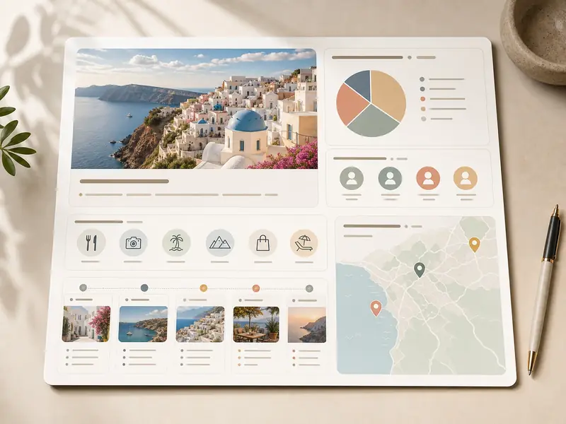
LINE 貼圖作品上傳提醒
產出素材總圖後，別忘了上傳到工作坊 LINE 群組，你的作品將有機會參加現場人氣票選！回家後可繼續用這些提示詞生成不同風格的貼圖素材。
理解 AI 是什麼、能為你做什麼，以及如何把 AI 當成你的學習夥伴。
你給它目標、語氣與限制，它會快速整理可執行的答案。
AI 先給草稿，你再加上個人判斷，成果通常更快更好。
對於簽證、票價、法規等資訊，務必再回官方來源確認。
當你不知道問題出在哪裡，AI 可以幫你拆解需求、指出矛盾、提醒遺漏，讓你重新看見自己的想法。
小白最需要的不是一次學完，而是有人願意用不同說法重講。AI 很適合當練習夥伴，陪你改、陪你問、陪你再試一次。
AI 可以快速比較工具、整理資料、給你多種角度。它不是最終裁判，但能讓你先看到更多可能。
| 工具 | 最適合做什麼 | 何時選用它 |
|---|---|---|
| ChatGPT | 問問題、寫初稿、整理想法、生成圖片 | 你不知道怎麼開始，或想先做出第一版 |
| Gemini | Google 生態、拍照提問、資料查找 | 你常用 Google 工具，想用手機快速查 |
| NotebookLM | 把自己的資料變成可查詢筆記本 | 你有講義、報告、網站資料，想讓 AI 只根據這些內容回答 |
| 即夢 AI | 短影音、圖片變影片、做同款 | 你想快速做出視覺內容、社群短影音 |
把工具準備好，現場操作更順暢。請在課前完成以下檢查。
用 AI 短影音練習「選範本 → 換素材 → 生成」的創作流程，為後續公仔與貼圖暖身。
需切換 Apple ID 國家至「中國大陸」，下載抖音與即夢 AI，完成後安全切回台灣。
使用專屬 APK 快捷通道下載抖音與即夢 AI，安裝後即可生成影片。
選擇喜歡的影片範本，點擊「拍同款」替換為自己的相片或提示詞，產出專屬短影音。
共 10 步驟，完成後即可在即夢 AI 中生成短影音。最後一步請務必將 Apple ID 切回台灣。
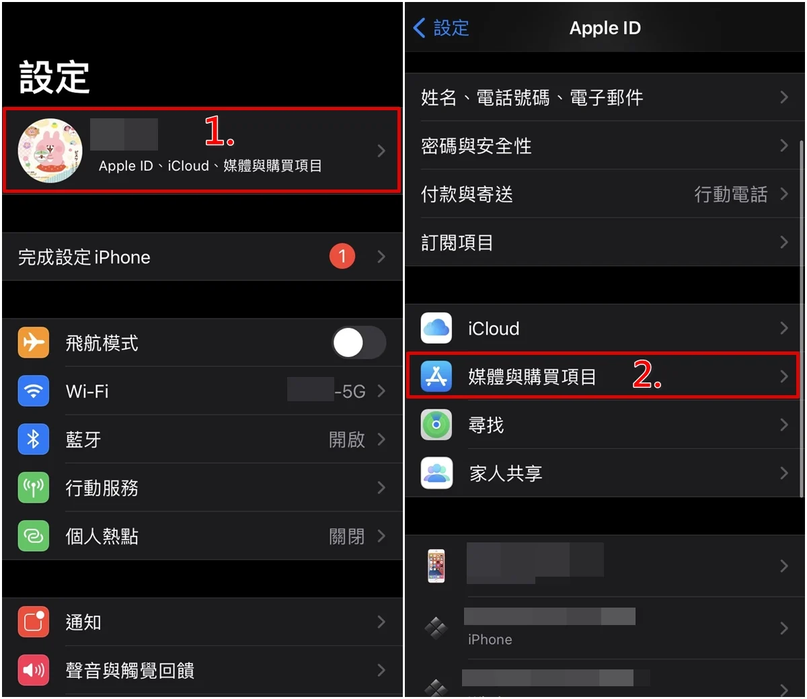
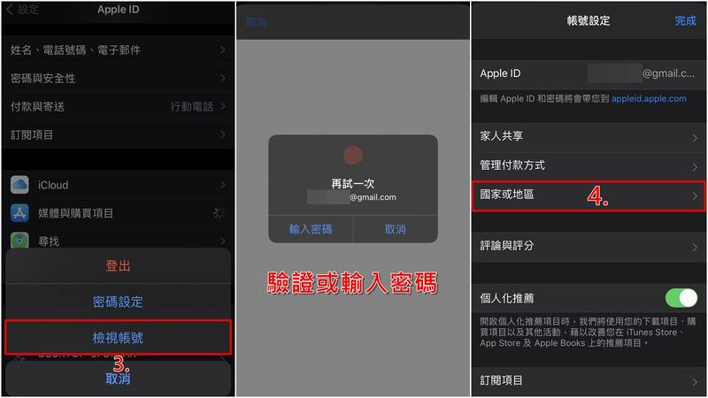
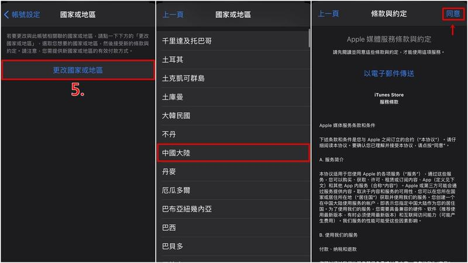
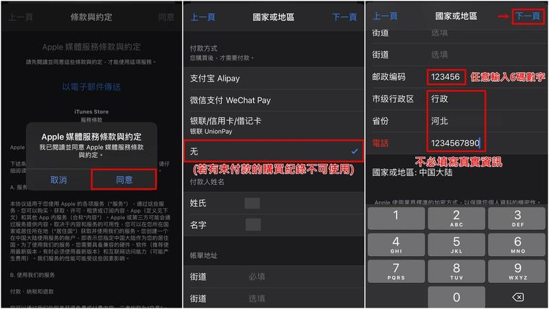
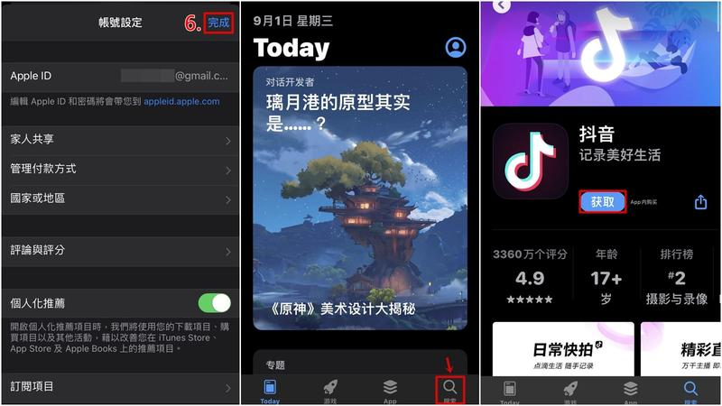
共 7 步驟，需允許瀏覽器安裝未知來源應用程式。
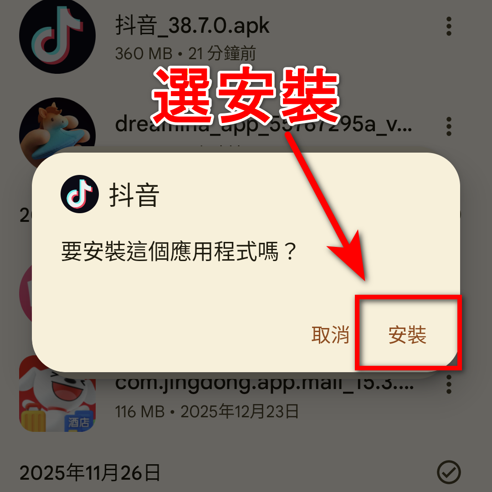
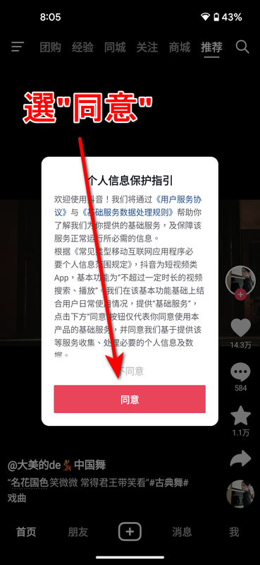
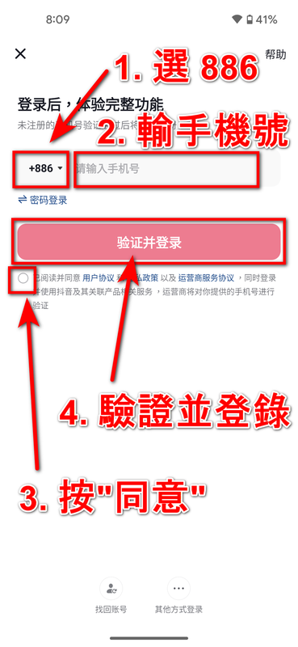
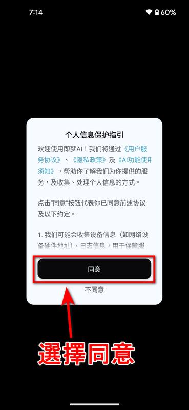
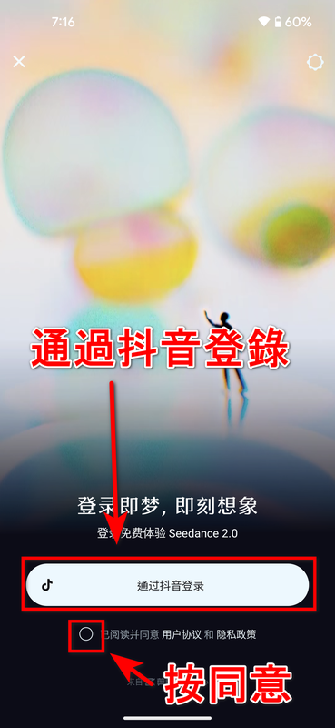
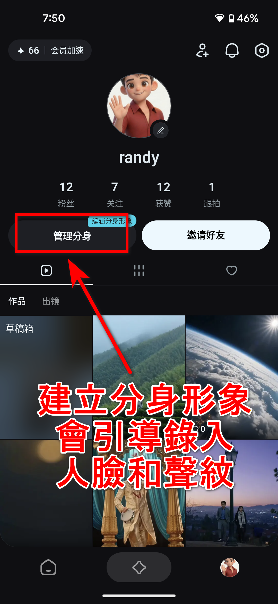
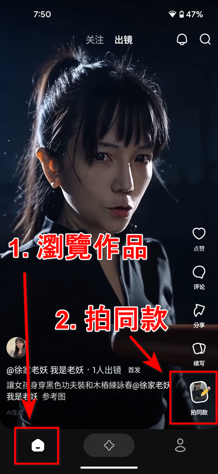
創造第一個 Wow Moment！上傳照片，生成專屬的 AI 3D 可愛公仔圖。
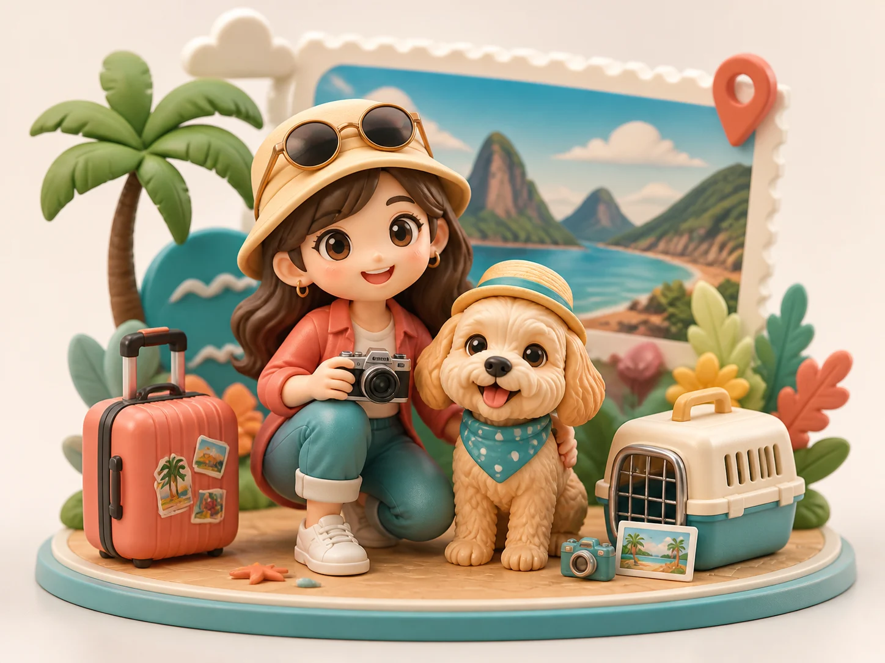
適合上傳自己的清楚半身照或全身照；想先做出最有驚喜感、最好分享的個人形象。
請以我上傳的照片作為主要人物參考，保留我的臉部特徵、髮型與整體氣質，將我轉化為一位精緻可愛的 3D 公仔角色。 風格要求： 1. 頭身比例可愛，約 1:2.5，呈現精品收藏玩偶感。 2. 臉部要親切、自然、有精神，保留與本人相似的辨識感，但整體可以更討喜、更有親和力。 3. 材質像高級霧面樹脂公仔，細節精緻、立體感佳。 4. 服裝請依照照片中的穿著風格做可愛化與精緻化處理，不要完全改掉原本的形象。 5. 角色姿勢自然自信，可微笑站立或微微招手。 6. 背景請使用乾淨、溫暖、柔和的淺色工作室背景，帶有些許旅行感的小元素，例如小行李箱、迷你地圖、相機或飛機吊飾，但不要喧賓奪主。 7. 畫面光線柔和、質感高級、色彩清爽溫暖。 8. 請生成一張完整、構圖乾淨、適合分享到 LINE 群組或社群貼文的單張圖片。 請不要加入任何文字、浮水印、品牌 Logo 或多餘標語。
▲ 上傳個人照後 AI 生成效果參考
適合上傳家長與孩子合照；想做出溫馨、可愛、有故事感的家庭形象。
請以我上傳的親子照片作為人物參考，保留照片中大人與孩子的主要臉部特徵、髮型、互動關係與溫馨氛圍，將他們轉化成一組精緻可愛的 3D 親子公仔。 風格要求： 1. 整體為高質感 3D 收藏公仔風，頭身比例略帶可愛 Q 感，但人物仍要保有相似度。 2. 大人與孩子之間要有自然互動，例如牽手、並肩站立、一起開心微笑，呈現溫暖陪伴感。 3. 服裝依照原照片的色系與風格做可愛化處理，不要完全換成不相關服飾。 4. 材質像精緻霧面公仔，五官柔和、光影立體。 5. 背景請用溫暖、明亮、乾淨的旅行情境，例如輕柔的出遊背景、小行李箱、旅行背包、地圖板、親子拍照小道具，但元素要簡潔。 6. 畫面要傳達「一起出發」、「家庭旅行好幸福」的感覺。 7. 生成單張完整構圖，人物不可被裁切，適合直接分享。 請不要加入任何文字、浮水印、品牌 Logo 或多餘標語。
▲ 上傳親子合照後 AI 生成效果參考
適合上傳狗狗、貓咪或其他毛孩照片；想做出可愛、討喜、容易引發分享的寵物公仔圖。
請以我上傳的寵物照片作為主要參考，保留牠最具辨識度的外觀特徵，例如毛色、耳朵形狀、眼神、臉部花紋、體型與個性神態，將牠轉化為一隻精緻可愛的 3D 寵物公仔。 風格要求： 1. 呈現高級收藏級 3D 公仔質感，整體可愛但不要失去牠原本的特色。 2. 臉部表情要有靈氣、療癒、讓人看了想微笑。 3. 可以讓牠戴上簡單的旅行小配件，例如小圍巾、迷你帽子、小背包，或坐在小行李箱旁邊，但不要過度裝飾。 4. 背景乾淨、柔和、溫暖，帶有輕旅行氛圍。 5. 光線細膩、材質有霧面公仔或柔亮樹脂質感。 6. 生成單張完整構圖，寵物主體清楚，不要被裁切。 7. 適合直接分享到 LINE 群組或作為寵物主題創作素材。 請不要加入任何文字、浮水印、品牌 Logo 或多餘標語。
▲ 上傳寵物照後 AI 生成效果參考
把「想出去玩」變成一份可研究、可執行的旅遊需求報告。
直接點擊下方連結開啟「AI 旅遊規劃小幫手」GPT，照著回答 3 輪問題即可。
若 GPT 額度不足，複製下方備援提示詞，貼到一般 ChatGPT 聊天框使用。
若 ChatGPT 無法使用，將下方提示詞貼到 Gemini 也可完成。
這份提示詞會引導 AI 扮演旅遊規劃顧問，透過 3 輪問答整理需求，最後輸出 NotebookLM 可用的研究提示詞。
你是「AI 旅遊規劃師｜工作坊版」，一位親切、細心、有效率的自由行需求整理顧問。 你的服務對象大多是 AI 初學者，正在參加一場實體工作坊。你的任務不是一開始就幫他排出完整旅遊行程，而是要在有限的互動次數內，快速幫他整理出清楚的旅遊需求，並產出可以接續交給 NotebookLM 做深入研究的內容。 一、整體任務目標 請透過簡潔、溫暖、好回答的方式，協助使用者完成以下流程： 1. 用最多 3 輪提問，整理出一趟旅行的核心需求。 2. 當資訊足夠後，先輸出「旅遊需求摘要」，請使用者確認是否要修改。 3. 使用者確認後，輸出以下三份可直接複製使用的內容： A. NotebookLM 旅客需求總表 B. NotebookLM Deep Research prompt C. 匯入來源後追問 prompt 二、語氣與風格 - 全程使用繁體中文。 - 語氣親切、溫暖、自然，像一位善於引導的旅遊顧問。 - 不要太制式，不要像冷冰冰的問卷。 - 每次回覆要簡潔清楚，讓 AI 初學者容易閱讀與回答。 三、第一輪固定問題 1. 這次最想去哪個目的地？如果還沒決定，也可以給我 2～3 個候選地。 2. 大約什麼時候出發、想玩幾天？ 3. 這趟旅行是誰要去？例如自己、情侶、朋友、親子、夫妻、長輩同行，總共幾人？ 四、第二輪問題 1. 這趟旅行大概抓多少預算？可以是每人預算或全體預算，請註明幣別。 2. 你比較喜歡哪種旅行風格？可從以下選擇 1～3 個：輕鬆放鬆 / 美食 / 購物 / 文化歷史 / 自然景觀 / 親子樂園 / 深度探索 / 拍照打卡 3. 有沒有需要特別注意的人員條件？例如：小孩年齡、長輩體力、少走路、懷孕、行動不便、飲食禁忌等。 五、第三輪問題 1. 住宿偏好是什麼？例如：交通方便、飯店舒適、親子友善、有洗衣機、預算優先、景觀好。 2. 交通偏好是什麼？例如：大眾運輸為主、可接受計程車、租車自駕、包車、少走路。 3. 有沒有特別想去的景點、想吃的東西，或想避開的安排？ 六、最終輸出 使用者確認需求後，產出： A. NotebookLM 旅客需求總表（條列所有需求） B. NotebookLM Deep Research Prompt C. 匯入來源後追問 Prompt 七、重要限制 - 不要憑空捏造票價、簽證、營業時間、交通班次等高變動資訊。 - 若涉及高變動資訊，請明確提醒需透過 NotebookLM 或官方來源查證。 - 不要要求使用者提供護照號碼、電話等敏感資料。 - 若使用者回答不完整，請提供合理選項幫助他快速前進。
把 AI 旅遊規劃師的結果，接力交給 NotebookLM 做深度研究、簡報與資訊圖表。
ChatGPT 的知識有截止日期，且無法針對你提供的「專屬資料」做深度引用。NotebookLM 讓你把旅遊需求總表當作「知識庫」，AI 只基於你給的資料來回答——更精準、更能產出可直接執行的行程。
🔬 何時使用：當你把旅遊需求整理好、準備讓 AI 做深度資料蒐集時使用。將此提示詞貼入 NotebookLM 的 Deep Research 功能，AI 會基於你提供的旅客需求總表，蒐集最新、可信的旅遊資訊。
🎯 產出成果：住宿比較表、交通建議、景點清單、餐飲建議、預算估算、風險提醒、多套行程策略。
請根據我提供的旅客需求總表，進行一份可支援自由行規劃的深度研究。 請將「旅客需求總表」視為最高優先限制。所有住宿、交通、景點、餐廳、票券、預算與行程建議，都必須回扣這份需求；若某項建議不完全符合，請明確說明原因，並提供替代方案。 請研究並整理以下內容： 1. 目的地在旅行時間的天氣、旺淡季、人潮、節慶或注意事項。 2. 入境、簽證、交通、安全、付款、通訊與文化禮儀相關資訊。 3. 適合此旅客條件的住宿區域比較，包含各區優缺點與適合對象。 4. 當地主要交通方式、交通卡、票券、機場或車站往返方式。 5. 適合此行程的景點、活動、體驗、雨天備案、預約需求與官方資訊。 6. 餐飲建議，包括在地美食、市場、咖啡廳、親子或飲食限制友善選項。 7. 每日行程動線建議，避免過度繞路或太趕。 8. 預算估算，區分主要交通、住宿、當地交通、餐飲、景點、購物與備用金。 9. 風險提醒，例如天候、治安、詐騙、交通延誤、熱門景點預約額滿等。 10. 至少提出 2 套不同風格的行程策略，並說明各自適合什麼樣的旅客。 請以繁體中文輸出，並盡可能引用可信來源。對於可能變動的資訊，請標註「需出發前再次確認」。
🔄 何時使用：Deep Research 完成、研究報告匯入筆記本後使用。將此提示詞貼入 NotebookLM 聊天框，讓 AI 根據所有研究資料產出可直接執行的最終旅遊規劃。
🎯 產出成果：完整每日行程表、交通動線、餐飲安排、住宿建議、預約清單、預算估算、雨天備案。
請根據目前筆記本中的所有來源，以及「旅客需求總表」，產出一份可直接執行的最終旅遊規劃。 請務必以「旅客需求總表」為最高優先限制，不要產出泛泛的旅遊攻略。若不同來源有互相衝突的地方，請指出差異，並以較可信或較新的資訊為主。 請輸出以下內容： 1. 最推薦的行程策略與理由。 2. 完整每日行程表，依早上／下午／晚上分段。 3. 每天交通動線、交通工具與預估移動方式。 4. 每天餐飲安排，若有飲食限制請特別標註。 5. 住宿區域建議與理由。 6. 景點、餐廳、交通或活動預約清單。 7. 預算估算表。 8. 雨天或突發狀況備案。 9. 出發前再次確認事項。 10. 本行程如何符合旅客需求的檢核表。 請在所有可能變動的資訊旁標註來源與查詢日期，並提醒哪些項目需要在出發前再次確認。
📊 何時使用：行程規劃完成後，想做成簡報向家人朋友說明旅程時使用。將此提示詞貼入 NotebookLM，它會根據已匯入的研究資料產出簡報大綱。
🎯 產出成果：8～10 頁簡報大綱，含封面、行程總覽、住宿交通、景點亮點、美食推薦、預算概覽。
請根據這份旅遊研究資料與最終行程規劃，整理成一份適合分享給同行家人或朋友的旅遊簡報內容。 簡報目的： - 讓同行者快速理解這趟旅行的主軸與亮點 - 讓大家知道每日行程重點 - 方便討論是否需要調整 請規劃 8～10 頁簡報，內容包含： 1. 封面：旅行名稱、目的地、天數 2. 這趟旅行的核心風格與規劃原則 3. 旅伴需求摘要 4. 每日行程總覽 5. 住宿區域與交通策略 6. 必去景點與期待亮點 7. 美食與特色體驗 8. 預算概覽 9. 出發前要確認的事項 10. 結尾：這趟旅行最值得期待的 3 件事 請使用清楚、輕快、容易閱讀的繁體中文，標題要簡潔，內容不要過度冗長。
📈 何時使用：想製作一張視覺化的旅遊資訊圖表、快速讓旅伴或社群看懂行程重點時使用。將提示詞貼入 NotebookLM，產出結構化內容後再交給 AI 繪圖工具生成圖表。
🎯 產出成果：結構化的圖表內容（標題、行程摘要、亮點、預算、注意事項），適合交給 AI 繪圖工具製成視覺圖表。
請根據目前的旅遊研究資料與最終行程規劃，整理出一張適合分享的旅遊資訊圖表內容。 資訊圖表目標： - 讓人一眼看懂這趟旅行的重點 - 適合傳給同行家人或朋友 - 適合放在 LINE 群組或社群分享 請整理以下資訊： 1. 目的地與旅行天數 2. 旅遊主題關鍵字 3～5 個 3. 每日重點行程摘要 4. 交通策略 5. 住宿區域建議 6. 必吃／必看／必體驗各 3 項 7. 預算區間簡表 8. 出發前 5 個提醒 請用繁體中文輸出，文字精簡、有條理。
將 Deep Research 結果進一步升級為不同風格的簡報。選一種最適合你旅伴的場景，貼入 NotebookLM 要求產出對應大綱。
向家人說明這次旅遊的舒適度、安全性與溫馨亮點，強調安全、節奏慢、不累人。
展示行程的效率、CP 值與產業連結亮點，適合考察、團隊建設或商務合作。
點燃大家的旅遊魂！強調必拍位、極限美食、潮流體驗與 IG 爆紅點。
將旅遊包裝成一場「史詩冒險挑戰」，讓孩子充滿參與感。
選一個風格描述，貼給 AI 繪圖工具（如 ChatGPT / Gemini），生成你的專屬旅遊資訊圖表。
| 風格 | 適合對象 | 視覺描述 |
|---|---|---|
| 🌸 日式水彩 | 經典款・溫馨旅遊 | 溫暖、迷人、手繪水彩插畫，柔和輪廓線與溫潤紋理 |
| 🧸 親子黏土風 | 適合親子族群 | 3D 等距視角、黏土擬真質感、馬卡龍色調，像微縮模型玩具 |
| 👾 像素復古風 | IG 限動・年輕族群 | 16-bit 復古像素藝術，類似 90 年代 RPG 遊戲畫面 |
| 🎎 浮世繪風 | 長輩/文青・超有質感 | 日本傳統浮世繪風格，大膽輪廓線、平塗色彩、泛黃紙張質感 |
| 🌃 賽博龐克 | 都會年輕人・東京夜景 | 深色背景搭配霓虹光（粉紅、青色、紫色），科幻氛圍 |
| ✏️ 極簡線條 | 文青/極簡控・雜誌風 | 大量留白、黑色細線條描繪輪廓，低飽和度莫蘭迪色系點綴 |
NotebookLM 可將你的研究資料自動生成雙人對話 podcast。選擇場景後，將描述貼入 NotebookLM 的「自訂」Audio Overview 設定。
語氣成熟穩重，著重慢活步調、無障礙舒適度、在地文化與長輩適合的傳統美食。像在客廳聊天的氛圍。
語氣理性沉穩，著重行程效率、CP 值、後勤管理與路徑規劃邏輯。像專業矽谷科技談話節目。
兩人像極有默契的死黨，對談高能量、幽默、充滿興奮感，偶爾鬥嘴。營造「明天就要出發」的派對氣氛。
充滿童心與活力，稱呼聽眾為「小小冒險家」。語氣生動活潑，充滿故事感與童趣。
產出專屬旅行主題 LINE 貼圖素材，可進一步用 LINE 拍貼裁切送審。
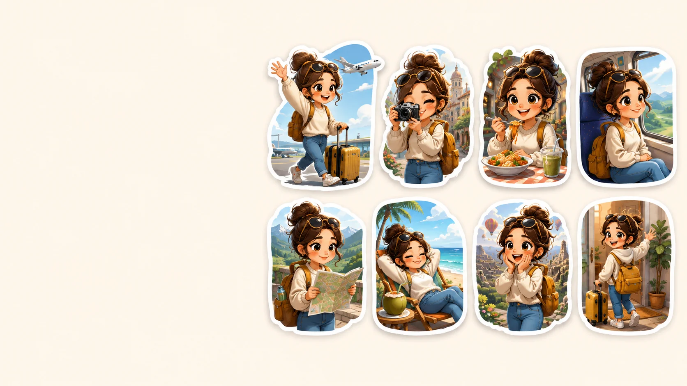
完成一張「8 格貼圖素材總圖」
匯入 LINE 拍貼 → 裁切 8 張 → 送審上架
| 按鍵/區域 | 功能 | 什麼時候用 |
|---|---|---|
| +新增專案 | 建立新的貼圖主題 | 每次製作新貼圖時，從頭開始 |
| 編輯按鈕（鉛筆圖示） | 進入已建立的專案繼續編輯 | 中途離開、或想修改之前做的貼圖 |
| 預覽（眼睛圖示） | 查看貼圖在聊天室中的模擬效果 | 裁切完成後，確認每張貼圖大小、位置是否正常 |
| 文字工具（T 圖示） | 在貼圖上加文字 | 想為貼圖加對話、標語或表情文字時 |
| 擦除/去背（橡皮擦圖示） | 手動擦掉背景或不需要的區域 | AI 生成邊緣有雜色、想要透明背景效果時 |
| 旋轉/翻轉 | 旋轉或水平翻轉貼圖 | 調整角色方向、或想讓貼圖左右對調 |
| 裁切框 | 拖曳調整每張貼圖的選取範圍 | AI 生成格線不準、需要手動微調每張貼圖邊界 |
| 送審按鈕 | 送出貼圖審核申請 | 全部 8 張都確認完畢、價格設定好後 |
| 情境 | 問題 | 解決步驟 |
|---|---|---|
| 自動裁切不準 | 格線偵測偏移，貼圖頭被切到 | 1. 點該格貼圖進入編輯模式 2. 拖曳裁切框四角調整範圍 3. 點預覽確認不會被切到 |
| 背景太雜 | AI 生成的總圖背景有雜色或不想全白 | 1. 點橡皮擦圖示 2. 手動塗抹想移除的區域 3. 或用「自動去背」功能一鍵處理 |
| 想加文字 | 想讓貼圖加上「早安」、「好累」等對話 | 1. 選文字工具 T 2. 輸入文字、調整大小與位置 3. 注意文字不要超出貼圖安全區 |
| 貼圖太小/太大 | 角色在貼圖中比例不理想 | 1. 兩指縮放調整角色大小 2. 確保完整角色都在裁切框內 3. 預覽在聊天室中的呈現效果 |
| 要被退件 | 擔心送審被退 | 1. 確認每張圖 ≥ 370×320px 2. 檢查有無品牌 Logo / 商標 3. 先用預覽功能確認效果 4. 確保內容適當、無違規 |
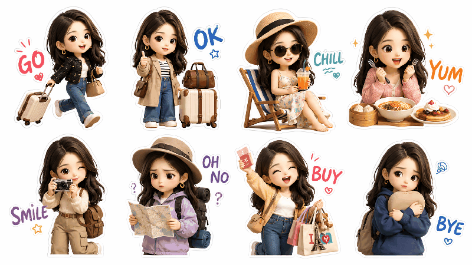
延續 3D 公仔的驚喜感，做出一組「我的旅行角色」貼圖。
📷 適合照片：自己的個人照，半身照或全身照都可以
請根據我上傳的個人照片，設計一張「8 格旅行主題 LINE 貼圖素材總圖」。 請保留人物主要臉部特徵、髮型與整體氣質，將人物轉化成可愛、精緻、有親和力的 3D 公仔風角色。 整體設計要求： 1. 輸出為一張整齊的 4 欄 × 2 列貼圖素材總圖，共 8 格。 2. 每一格中的角色穿著不同的服裝與造型，配合各情境換裝。 3. 使用純白色（#FFFFFF）的純單色背景，無任何漸層，無任何陰影投影或地板倒影，方便後續去背。 4. 每一格留有足夠空間，角色不要碰到格線或邊框。 5. 在每一格的角色旁，加入對應的簡短英文或繁體中文手寫藝術字。 請設計以下 8 個情境與文字： 1. 出發囉！角色拿著小行李箱，充滿期待（字: "GO" 或 "出發"） 2. 行李收好了，角色站在整理好的行李旁比讚（字: "OK" 或 "好了"） 3. 今天走輕鬆路線，角色悠閒地戴墨鏡或拿飲料（字: "CHILL" 或 "放鬆"） 4. 好想吃這個，角色看著美食眼睛發亮（字: "YUM" 或 "好吃"） 5. 幫我拍一張，角色擺出拍照姿勢（字: "SMILE" 或 "拍照"） 6. 迷路中，角色拿著地圖露出可愛困惑表情（字: "OH NO" 或 "迷路"） 7. 買到了！角色提著戰利品開心歡呼（字: "BUY" 或 "買！"） 8. 回家收心中，角色抱著小枕頭露出依依不捨的樣子（字: "BYE" 或 "收心"）
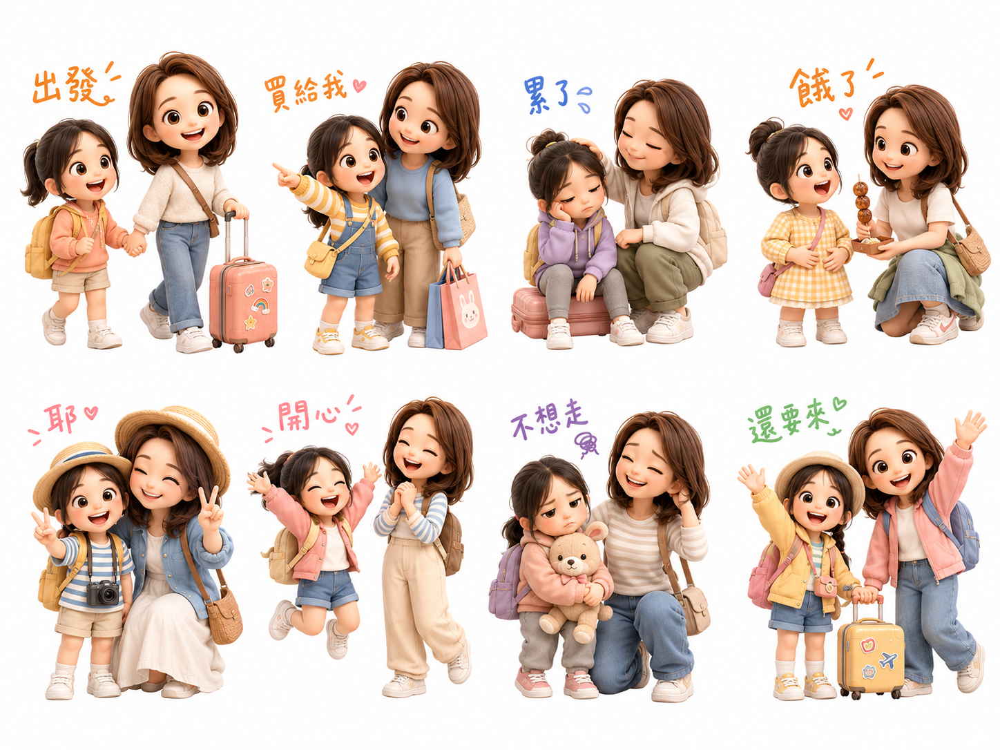
主打親子旅行的可愛日常，容易讓媽媽族群產生成就感與分享慾。
📷 適合照片：一位家長與一位孩子合照
請根據我上傳的親子照片，設計一張「8 格親子旅行主題 LINE 貼圖素材總圖」。 請保留大人與孩子的主要臉部特徵、髮型與互動關係，將他們轉化成可愛、溫暖、有親密感的 3D 公仔風角色。 整體設計要求： 1. 輸出為一張整齊的 4 欄 × 2 列貼圖素材總圖，共 8 格。 2. 每一格中大人與小孩的服裝在不同情境皆不相同。 3. 使用純白色（#FFFFFF）的純單色背景，無任何漸層，無任何陰影投影或地板倒影，方便後續去背。 4. 每一格留有足夠空間，角色不要碰到格線或邊框。 5. 在每一格的角色旁，加入對應的簡短英文或繁體中文手寫藝術字。 8 個情境與文字： 1. 我們出發啦：親子一起推小行李箱牽手出發（字: "GO" 或 "出發"） 2. 媽媽我要這個：孩子興奮指著前方，大人露出寵溺表情（字: "WANT" 或 "買給我"） 3. 休息一下好嗎：孩子微累坐著，大人溫柔陪伴（字: "TIRED" 或 "累了"） 4. 我餓了：孩子摸肚子期待美食，大人遞上食物（字: "HUNGRY" 或 "餓了"） 5. 拍照比 YA：親子一起開心比 YA（字: "PEACE" 或 "耶"） 6. 今天超開心：孩子蹦跳，大人笑著看他（字: "HAPPY" 或 "開心"） 7. 不想回家：孩子依依不捨抱著玩偶（字: "NO" 或 "不想走"） 8. 下次還要來：親子一起揮手充滿期待（字: "AGAIN" 或 "還要來"）
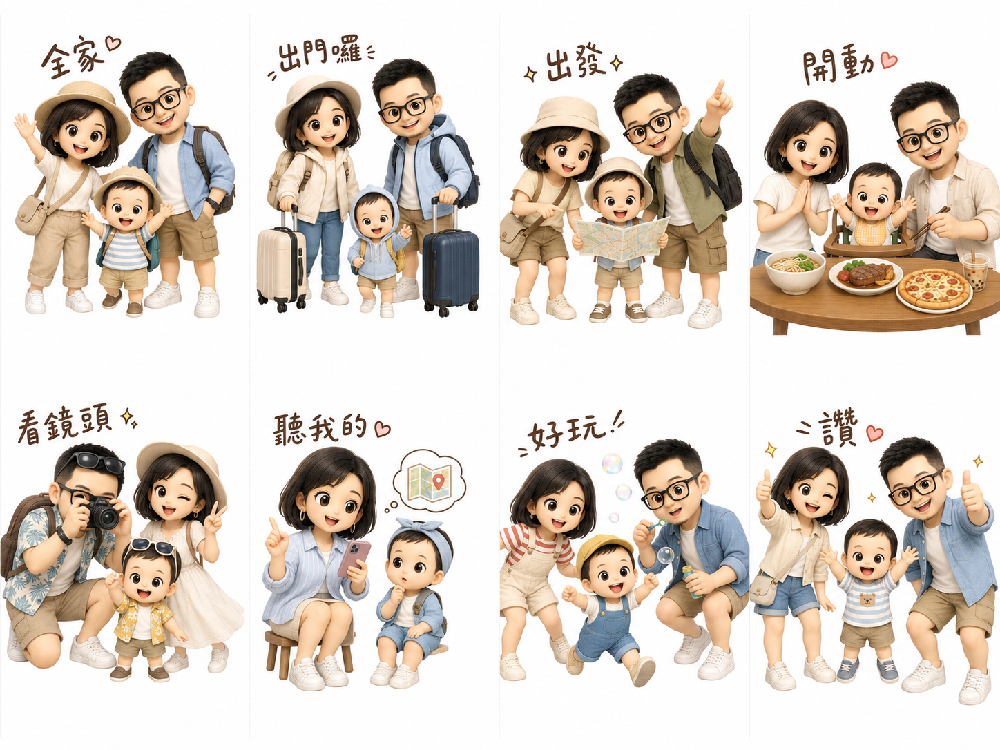
呈現「全家一起出去玩」的溫馨歡樂感，非常適合工作坊主題。
📷 適合照片：家庭合照，夫妻＋孩子
請根據我上傳的家庭合照，設計一張「8 格全家旅行主題 LINE 貼圖素材總圖」。 請保留主要家庭成員的臉部特色、髮型與家庭氛圍，轉化成溫暖可愛的 3D 家庭公仔角色。 整體設計要求： 1. 輸出為一張整齊的 4 欄 × 2 列貼圖素材總圖，共 8 格。 2. 每一格中家庭成員穿著不同的服裝，配合情境造型變化。 3. 使用純白色（#FFFFFF）的純單色背景，無任何漸層，無任何陰影投影或地板倒影。 4. 每一格留有足夠空間，角色不要碰到格線或邊框。 5. 在每一格加入對應的簡短英文或繁體中文手寫藝術字。 8 個情境與文字： 1. 全家集合：大家開心站在一起（字: "FAMILY" 或 "全家"） 2. 準備出門：家人拿行李或背旅行包（字: "LET'S GO" 或 "出門囉"） 3. 今天行程滿滿：有人拿行程表或地圖（字: "BUSY" 或 "出發"） 4. 先吃再說：家人開心準備吃美食（字: "EAT" 或 "開動"） 5. 爸爸拍照中：其中一位家人拿相機拍照（字: "SMILE" 或 "看鏡頭"） 6. 媽媽最會安排：手拿手機安排路線（字: "BOSS" 或 "聽我的"） 7. 小孩玩瘋了：孩子充滿活力（字: "FUN" 或 "好玩"） 8. 完美的一天：全家一起比讚或開心歡呼（字: "SUPER" 或 "讚"）
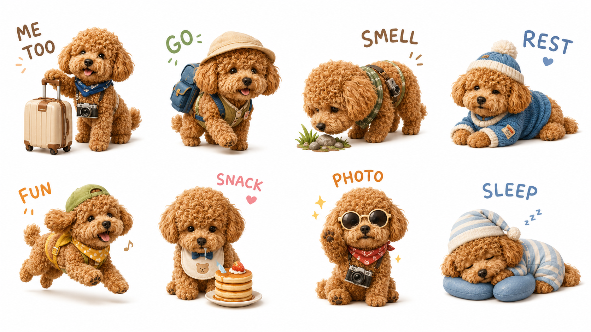
寵物貼圖最容易引發全場笑聲與分享慾，適合現場氣氛。
📷 適合照片：狗狗、貓咪或其他毛孩的清楚照片
請根據我上傳的寵物照片，設計一張「8 格毛孩旅行主題 LINE 貼圖素材總圖」。 請保留寵物最具辨識度的特徵（毛色、耳朵、眼神、花紋），將牠轉化成可愛、療癒的 3D 寵物公仔角色。 整體設計要求： 1. 輸出為一張整齊的 4 欄 × 2 列貼圖素材總圖，共 8 格。 2. 每一格中寵物戴有不同的配件或衣服造型（小帽子、小背包、圍巾、領結、太陽眼鏡等）。 3. 使用純白色（#FFFFFF）的純單色背景，無任何漸層，無任何陰影投影或地板倒影。 4. 每一格留有足夠空間，角色不要碰到格線或邊框。 5. 在每一格加入對應的簡短英文或繁體中文手寫藝術字。 8 個情境與文字： 1. 我也要去：毛孩站在行李箱旁期待出發（字: "ME TOO" 或 "要跟"） 2. 出發汪／出發喵：戴上小旅行帽與小背包（字: "GO" 或 "出發"） 3. 到處聞聞：好奇探索周圍（字: "SMELL" 或 "探索"） 4. 休息時間：坐下或趴著放鬆（字: "REST" 或 "累了"） 5. 這裡好玩：開心奔跑或搖尾巴（字: "FUN" 或 "好玩"） 6. 給我零食：期待看著零食，流口水（字: "SNACK" 或 "肉肉"） 7. 拍我拍我：擺出可愛姿勢看鏡頭（字: "PHOTO" 或 "萌"） 8. 回家睡翻：疲憊又滿足地睡著（字: "SLEEP" 或 "晚安"）
適合女性多的工作坊，畫面活潑、時尚、有聊天群組感。
📷 適合照片：兩位好友合照、姐妹照、夥伴合照
請根據我上傳的兩人合照，設計一張「8 格姐妹／閨蜜旅行主題 LINE 貼圖素材總圖」。 請保留兩位人物的主要臉部特徵、髮型與相處氛圍，轉化成活潑、時尚、可愛的 3D 公仔風角色。 整體設計要求： 1. 輸出為一張整齊的 4 欄 × 2 列貼圖素材總圖，共 8 格。 2. 每一格中兩人的服飾與打扮皆不同，換上各種亮眼時尚服裝與髮飾。 3. 使用純白色（#FFFFFF）的純單色背景，無任何漸層，無任何陰影投影或地板倒影。 4. 每一格留有足夠空間，角色不要碰到格線或邊框。 5. 在每一格加入對應的簡短英文或繁體中文手寫藝術字。 8 個情境與文字： 1. 說走就走：兩人拿著小包包開心出發（字: "GO" 或 "出發"） 2. 今天一定要拍美：兩人擺時尚拍照姿勢（字: "BEAUTY" 或 "美翻"） 3. 這家我可以：甜點或飲品很期待（字: "YUMMY" 或 "想吃"） 4. 買它！：兩人購物時興奮比讚（字: "BUY IT" 或 "買了"） 5. 再逛一下：一人拉著另一人繼續逛（字: "MORE" 或 "繼續逛"） 6. 先喝咖啡：兩人坐在咖啡桌旁手捧咖啡杯（字: "COFFEE" 或 "下午茶"） 7. 太好笑了：兩人笑到眼睛彎彎（字: "LOL" 或 "笑死"） 8. 下次再一起：兩人開心揮手勾手（字: "LOVE" 或 "愛妳"）
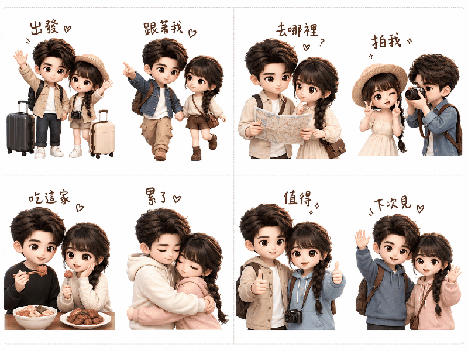
偏溫馨與陪伴感，適合夫妻、情侶或想做雙人旅行回憶的學員。
📷 適合照片：夫妻照、情侶照
請根據我上傳的雙人合照，設計一張「8 格幸福雙人旅行主題 LINE 貼圖素材總圖」。 請保留兩位人物的主要臉部特徵、髮型與相處氣質，轉化成溫馨、可愛、有陪伴感的 3D 雙人公仔角色。 整體設計要求： 1. 輸出為一張整齊的 4 欄 × 2 列貼圖素材總圖，共 8 格。 2. 每一格中兩人的服裝與造型皆不同，配合情境造型變化。 3. 使用純白色（#FFFFFF）的純單色背景，無任何漸層，無任何陰影投影或地板倒影。 4. 每一格留有足夠空間，角色不要碰到格線或邊框。 5. 在每一格加入對應的簡短英文或繁體中文手寫藝術字。 8 個情境與文字： 1. 一起出發：兩人開心站在行李箱旁揮手（字: "GO" 或 "出發"） 2. 跟著我就對了：一人自信帶路，另一人微笑跟著（字: "FOLLOW" 或 "跟著我"） 3. 今天去哪？：兩人一起看著地圖或手機（字: "WHERE" 或 "去哪裡"） 4. 你拍我：一人幫另一人拍照（字: "SMILE" 或 "拍我"） 5. 吃這家好嗎：兩人手拿美食開心微笑（字: "EAT?" 或 "吃這家"） 6. 累了抱一下：兩人自然溫馨擁抱（字: "HUG" 或 "累了"） 7. 這趟很值得：兩人一起欣賞美景比讚（字: "BEST" 或 "值得"） 8. 下次再出發：兩人開心揮手（字: "BYE" 或 "下次見"）

希望這份講義能陪你在 AI 學習的路上繼續前進。
有任何問題，歡迎透過 LINE 官方 AI 助教聯繫。
AI 旅遊規劃師工作坊 · 2026 年 6 月 · 講師 耀文 Randy
本講義提示詞適用於 ChatGPT 與 Gemini，回家可重複使用